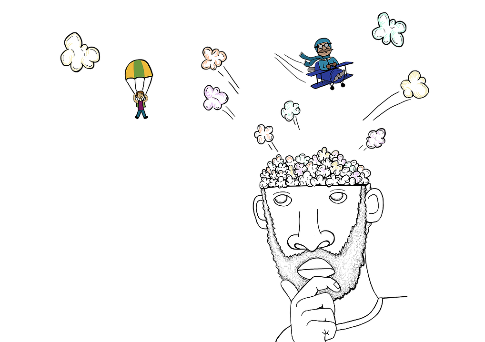

你的未来
（It's Your Future）
schedule45-90 分钟
stars初级（Beginner）
face3-5 年级
一. 人类的未来需要什么样的人才？

- 【人类面临哪些问题？】人口增长过快、环境污染、资源缺乏、新型病毒、恐怖主义、核安全等。
- 【谁去解决这些问题？】人类需要更多的科学家、工程师去改变世界，解决难题。
- 【如何培养科学家、工程师？】VEX 平台通过机器人课程，培养孩子的科学思维、工程思维、创造力等。
- 【科学家（Scientists）】人的力量是有限的，但人会使用工具，来移动很重的物体。如使用杠杆、滑轮、齿轮等机械设备。
- 【工程师（Engineers）】人的力量是有限的，但人会使用工具，来移动很重的物体。如使用杠杆、滑轮、齿轮等机械设备。
- 【解决问题的领导者（）】人的力量是有限的，但人会使用工具，来移动很重的物体。如使用杠杆、滑轮、齿轮等机械设备。
二. 什么是 STEM ？（What is STEM?）

让我们设计一台简单机器来帮助移动重物吧！
三. 什么是工程学？（What is Engineering?）

让我们设计一台简单机器来帮助移动重物吧！
四. 什么是机器人学 ？（What is Robotics?）
让我们设计一台简单机器来帮助移动重物吧！
三. 头脑风暴（Brainstorm）

- 花 3 分钟时间，独自头脑风暴，尽可能多地想象出能移动物体的简单机器。
- 想法可以用笔画出来，想法可以用积木搭建出来。
- 小组内轮流分享想法，并选择最佳的、可用积木实现的想法。
- 每个小组的想法都是个性化的，不一样的。
- 分享你的想法、思考。

四. 选出最好的想法（Choose the Best Idea）

依据设计标准（Design Criteria），选出最好的想法。
五. 制作（Make）

- 使用积木实现你的想法。
- 在制作过程中，测试和分析你的想法，必要时可进行改进。
六. 评估（Evaluate）

- 依据设计标准，测试和评估模型。
七. 展示（Present）

- 向大家展示你的模型，分享你的想法、草图（Sketche）。
- 把模型放到展示台上，来张合影吧！
八. 整理（Tidy Up）

同学们今天非常棒，最后让我们拆解模型，把积木分类存放到收纳盒吧。